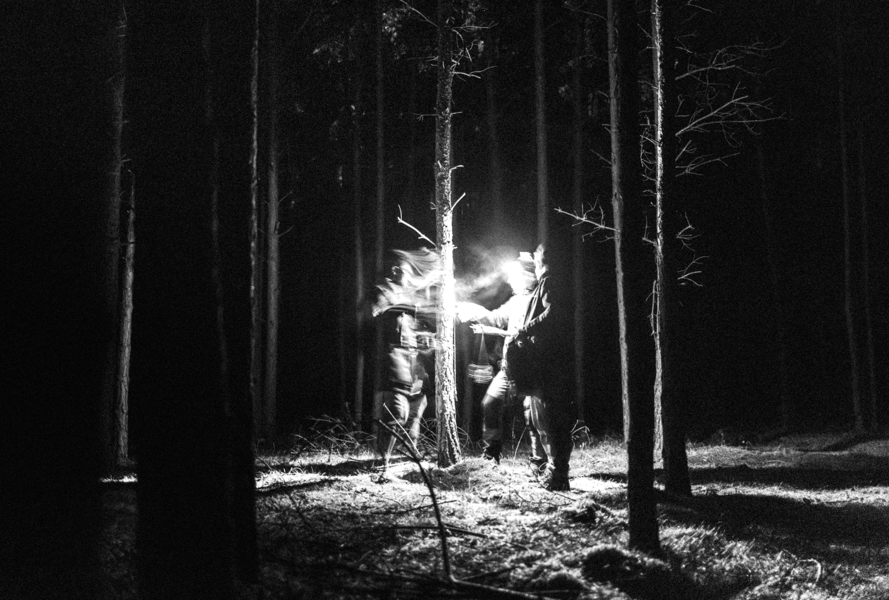

Sobre Nós

Somos um grupo de pesquisadores do paranormal dedicados a investigar casos inexplicáveis que desafiam a lógica e a ciência convencional.
Nossa Equipe
- Dr. Alan Wake - Investigador Chefe com 20 anos de experiência
- Sarah Connor - Especialista em Fenômenos Paranormais
- Mike Flanagan - Documentarista e Cineasta